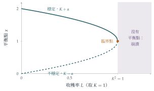

STEP II 1995，第 8 題
繼續之前，請先閱讀題目（原題為英文）。題目載於 STEP Support Programme 的題目資料庫： step.maths.org/questions/95-s2-q8
引子
食物供應無限的種羣會以指數增長（exponential growth）的方式擴張。現實中的種羣卻總會用盡空間：當種羣數量接近環境所能維持的上限，即其環境承載力（carrying capacity）時，增長便會放緩。描述這個現象的最簡單模型是邏輯斯諦方程（logistic equation），它出現在本題的前半部分，由培養皿中的細菌到新科技的普及，都可以用它來描述。
後半部分所問的，是一個在現實中關係重大的問題：假如我們以穩定的速率收穫（harvest）這個種羣，會發生甚麼事？在某個閾值（threshold）以下，種羣會調整到一個新的、較低的平衡點（equilibrium）。但只要收穫率越過這個閾值，哪怕只是超出少許，平衡點便會消失，種羣數量隨即崩潰至零。這就是漁業崩潰背後的數學，也是設立捕魚配額的原因。
動筆之前
在動手求解之前，先把增長率 \((2K - x)x\) 當作 \(x\) 的函數，畫出它的略圖。它在哪裏為零？在哪裏為正？這告訴你 \(x\) 會怎樣變化？
增長率在 \(x = 0\) 和 \(x = 2K\) 處為零，在兩者之間為正，超過 \(2K\) 則為負。所以，由 \(0\) 與 \(2K\) 之間出發的種羣會向 \(2K\) 增長，而由 \(2K\) 以上出發的種羣則會向它縮減。環境承載力是 \(2K\)，而增長在 \(x = K\) 時最快，那時的增長率是 \(K^2\)。不必解方程，你也能預測長遠的變化。
逐步解題
階段 1 解邏輯斯諦方程
分離變量（separate the variables）：\(\displaystyle\int \frac{\mathrm{d}x}{(2K - x)x} = \int \mathrm{d}t\)。把左邊拆成部分分式（partial fractions）。
\(\dfrac{1}{(2K - x)x} = \dfrac{1}{2K}\left(\dfrac1x + \dfrac{1}{2K - x}\right)\)，所以 \[\frac{1}{2K}\ln\frac{x}{2K - x} = t + C.\] 當 \(t = 0\) 時，\(x = K\)，所以 \(\ln 1 = 0\)，而 \(C = 0\)。於是 \(\frac{x}{2K - x} = e^{2Kt}\)，由此得 \[x = \frac{2Ke^{2Kt}}{1 + e^{2Kt}} = \frac{2K}{1 + e^{-2Kt}} = K + K\frac{1 - e^{-2Kt}}{1 + e^{-2Kt}}. \qed\] 這個分式就是 \(\tanh(Kt)\)，所以 \(x = K + K\tanh Kt\)：這是一條由 \(K\) 上升並趨向 \(2K\) 的 S 形曲線。當 \(t \to \infty\) 時，\(e^{-2Kt} \to 0\)，而 \(x \to 2K\)。
階段 2 收穫
以速率 \(L\) 移走細菌，便得 \[\frac{\mathrm{d}x}{\mathrm{d}t} = (2K - x)x - L.\]
對 \((2K - x)x - L\) 進行配方（complete the square）。它的零點在哪裏？
\((2K - x)x - L = K^2 - L - (x - K)^2 = \alpha^2 - (x - K)^2 = \bigl(\alpha - (x - K)\bigr)\bigl(\alpha + (x - K)\bigr)\)。平衡點是 \(x = K \pm \alpha\)。
現在作代換（substitution）\(y = x - K + \alpha\)。\(y\) 滿足甚麼方程？把它與原來的邏輯斯諦方程比較一下。
設 \(y = x - K + \alpha\)，則 \(x - K = y - \alpha\)，所以 \(\alpha + (x - K) = y\)，而 \(\alpha - (x - K) = 2\alpha - y\)。因此 \[\frac{\mathrm{d}y}{\mathrm{d}t} = (2\alpha - y)y,\] 這又是邏輯斯諦方程，只是 \(K\) 換成了 \(\alpha\)。初始時 \(y(0) = K - K + \alpha = \alpha\)，正好對應第一部分的 \(x(0) = K\)。所以根據第 1 階段的結果（以 \(\alpha\) 代替 \(K\)），\(y(t) = \alpha + \alpha\tanh\alpha t \to 2\alpha\)，因此 \[x(t) = K + \alpha\tanh\alpha t \to K + \alpha. \qed\]
回顧
先作定性分析。還未動手求解，增長率的正負號已經預測了長遠的變化。
配方揭示平衡點。有收穫的方程的平衡點在 \(K \pm \alpha\)。
代換把新問題化為舊問題。把變量平移之後，有收穫的方程便變成了早已解出的邏輯斯諦方程。
背後的數學
有收穫的方程有兩個平衡點，\(K + \alpha\) 和 \(K - \alpha\)。上面的一個是穩定（stable）的：種羣數量稍高於或稍低於它，都會回到它那裏。下面的一個是不穩定（unstable）的：種羣數量只要稍低於 \(K - \alpha\)，便會一直下跌，直至滅絕。隨着收穫率 \(L\) 增加，\(\alpha = \sqrt{K^2 - L}\) 會縮小，兩個平衡點互相靠近；到 \(L = K^2\) 時兩者合而為一，而當 \(L > K^2\) 時則完全沒有平衡點，任何種羣都會崩潰（圖 8.3.1）。這是一個鞍結分岔（saddle-node bifurcation），是最簡單的一種臨界點（tipping point）。它的可怕之處，在於事前沒有任何明顯的預兆：當 \(L\) 接近 \(K^2\) 時，平衡種羣數量只是緩緩下降，然後平衡點突然不復存在。事後才減少收穫未必有用，因為種羣數量可能已經跌到不穩定的閾值以下。

最大可持續產量
種羣所能承受的最大收穫量是多少？答案是 \(L = K^2\)，即增長率 \((2K - x)x\) 的峯值，在種羣數量維持於 \(K\)（環境承載力的一半）時達到。二十世紀中葉，漁業科學採納了這個「最大可持續產量」（maximum sustainable yield）作為管理目標。可是，恰好按最大值收穫，就等於把系統恰好放在臨界點上，只要稍為高估了 \(K\)，或者遇上一個壞年頭，便會引致崩潰。紐芬蘭對開的大淺灘（Grand Banks）鱈魚漁場，五百年來一直是全世界最豐饒的漁場之一，卻在 1990 年代初崩潰；1992 年，加拿大政府頒布禁捕令，令數以萬計的人失去工作。魚類資源至今仍未完全恢復。
其他地方的邏輯斯諦增長
邏輯斯諦方程由 Pierre-François Verhulst 於 1838 年提出，用來為人類人口建立模型。同一條 S 形曲線，也描述了疫症初期的傳播、新科技的普及、自催化化學反應以及腫瘤的生長。它的離散時間版本，即邏輯斯諦映射（logistic map），表現卻截然不同：它可以是混沌（chaotic）的，我們會在 第 8.7 節 看到。
思維技巧
對於方程 \(x' = f(x)\)，平衡點就是 \(f\) 的零點，而 \(f\) 在各零點之間的正負號，告訴你解會向哪個方向移動。
若 \(f\) 在某個平衡點由正變負，該平衡點是穩定的；若由負變正，則是不穩定的。畫出 \(f\) 的圖像，往往不必求解任何東西，便能回答最重要的問題。
延伸練習
由低處出發。在有收穫且 \(K^2 > L\) 的情況下，證明若 \(x(0) < K - \alpha\)，則種羣數量會在有限時間內降至零。（提示：當 \(y(0) < 0\) 時，\(y\) 會怎樣變化？）
過度收穫。若 \(L > K^2\)，設 \(\beta = \sqrt{L - K^2}\)。在 \(x(0) = 2K\) 的條件下解 \(x' = -(x - K)^2 - \beta^2\)，並求種羣數量何時降至零。
按比例收穫。假設改為移走種羣中某個固定的比例：\(x' = (2K - x)x - hx\)。求平衡點，並證明對所有 \(h < 2K\)，種羣都能存活。為甚麼這個方案較為安全？
半程時間。在沒有收穫的情況下，求種羣數量達到 \(\frac32K\) 的時間。
延伸閱讀
Steven Strogatz, Nonlinear Dynamics and Chaos（CRC Press）。第 3 章討論分岔，並以這個收穫模型作為習題。
Nicholas Britton, Essential Mathematical Biology（Springer）。為大學本科生而寫的種羣模型。
Mark Kurlansky, Cod: A Biography of the Fish That Changed the World（Penguin）。鱈魚漁業及其崩潰的歷史。